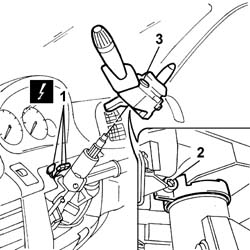

5550A12 COMPLETE STALK UNIT - R+R FOR VERSIONS WITH AIR BAG
- Path
- Procedures > 55 ELECTRICAL EQUIPMENT > 5550 WARNING AND MANOEUVRING INDICATORS > 5550A STALK UNIT > 5550A12 COMPLETE STALK UNIT - R+R FOR VERSIONS WITH AIR BAG
- Kind
- repair procedure (removal / refitting; the operation number is the code)
- Applies to
- all engines; all production periods
- Interactive page
- https://sloeber94.github.io/elrnDB-fDct/en/#/244001384
Applies to: all engines; all production periods
 Removing
Removing
 Refitting
Refitting- Disconnect the negative battery terminal.
Op. 5580C18 AIR BAG MODULE - R+R
Op. 4110A10 STEERING WHEEL - R+R FOR REPLACEMENT OR CHECKS
Op. 7040A26 STEERING COLUMN TRIM - R+R
Op. 5580C12 CLOCK SPRING FOR AIR BAG MODULE ON STEERING WHEEL R R
1. Disconnect the electrical connections.
 | Description | Connector |
|---|---|---|
1 | Steering column switch unit | H005A |
| Description | Connector |
|---|---|---|
1 | Steering column switch unit | H005B |
| Description | Connector |
|---|---|---|
1 | Steering column switch unit | H005C |
2. Loosen the collar bolt.
3. Remove the steering column switch unit.

Applies to: all engines; all production periods
Refitting
Removing- Position the steering columnn switch unit and tighten the collar bolt.
- Connect the electrical connections.
| Description | Connector |
|---|---|---|
1 | Steering column switch unit | H005A |
| Description | Connector |
|---|---|---|
1 | Steering column switch unit | H005B |
| Description | Connector |
|---|---|---|
1 | Steering column switch unit | H005C |
Op. 5580C12 CLOCK SPRING FOR AIR BAG MODULE ON STEERING WHEEL R R
Op. 7040A26 STEERING COLUMN TRIM - R+R
Op. 4110A10 STEERING WHEEL - R+R FOR REPLACEMENT OR CHECKS
Op. 5580C18 AIR BAG MODULE - R+R
- Connect the negative battery terminal.
Topics linked from this page (4)
- 4110A10 STEERING WHEEL - R+R FOR REPLACEMENT OR CHECKS
- 5580C12 CLOCK SPRING FOR AIR BAG MODULE ON STEERING WHEEL R R
- 5580C18 AIR BAG MODULE - R+R
- 7040A26 STEERING COLUMN TRIM - R+R
Topics that link to this page (18)
- I01 SIDE LIGHTS/NO. PLATE LIGHTS NOT WORKING
- I03 NUMBER PLATE LIGHT NOT WORKING
- I05 DIPPED HEADLAMPS NOT WORKING
- I06 MAIN BEAM HEADLAMPS NOT WORKING
- I12 TURN SIGNALS RH OR LH SIDE NOT WORKING
- I20 FOG LIGHTS NOT WORKING
- I21 REAR FOG LAMPS NOT WORKING
- I35 DIRECTION INDICATORS (TWO) RH AND LH NOT WORKING
- I36 TURN SIGNAL FRONT (ONE) RH OR LH NOT WORKING
- I37 REAR TURN SIGNAL (ONE) RH OR LH NOT WORKING
- I38 SIDE TURN SIGNAL (ONE) RH OR LH NOT WORKING
- J01 WINDSCREEN/REARSCREEN WASHERS NOT WORKING
- J02 WINDSCREEN WIPERS NOT WORKING
- J03 SCREEN WASHER NOT WORKING
- J10 HEADLAMP WASHERS NOT WORKING
- 3330D12 BRAKE SERVO - R R FOR RIGHT HAND DRIVE VERSIONS - INCLUDES SEPARATION FROM MASTER CYLINDER(PUMP)
- 4110A21 STEERING WHEEL ADJUSTMENT DEVICE - R.R.
- 4110A31 MOUNT WITH STEERING CONTROL SHAFTS - RR - INCLUDES RR STEERING WHEEL FOR VERSIONS WITH AIR BAG